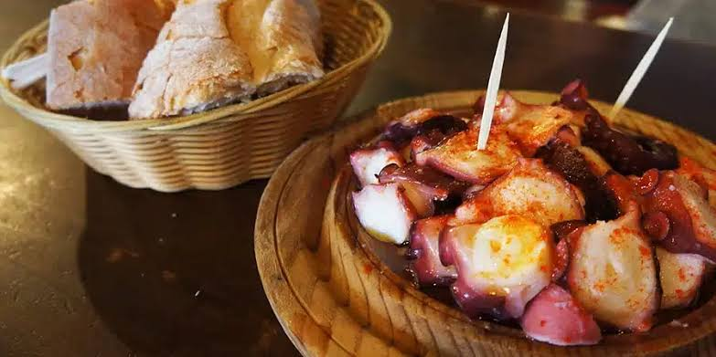

Food on the Camino is structured around the walking schedule, with most pilgrims falling into a very specific daily rhythm.
The Daily Routine
☕ Breakfast (7:00 AM - 8:00 AM)
Breakfast is light and quick. Most bars open early just for pilgrims. You will typically get a café con leche (coffee with milk) and a tostada (toast with oil or jam) or a pastry. This costs about €3 to €5.
🥞 Second Breakfast (10:30 AM)
Because the initial breakfast is small, most hikers stop mid-morning at a trailside café to rest their feet and eat a slice of tortilla española (potato omelet) or a bocadillo (sandwich).
🥪 Lunch (1:00 PM - 2:00 PM)
Heavy lunches make walking difficult. The standard logistical approach is to buy fruit, nuts, bread, and cheese from a local supermarket the evening before, carrying it in your daypack for a picnic lunch on the trail.
🍲 Dinner (6:30 PM - 8:00 PM)
This is the main meal of the day. Restaurants along the Camino start serving dinner much earlier than typical Spanish restaurants (which often do not open until 8:30 PM or 9:00 PM) to accommodate tired pilgrims who need to sleep early.
The Pilgrim's Menu (Menú del Peregrino)
For dinner, most restaurants offer a set menu designed specifically to refill calorie deficits. It typically costs between €12 and €18 and includes:
First Course: A carbohydrate or vegetable base, such as pasta, lentil stew, or a large mixed salad. Click
Second Course: Protein, usually roast chicken, pork loin, or fish, almost always served with French fries.
Dessert: Options like flan, yogurt, or ice cream.
Drinks: Bread and a beverage (water, or a bottle of local house wine to share) are usually included in the flat price. Click
Regional Specialties in Galicia
Since your 5-day hike is entirely within the region of Galicia, you will have access to specific local foods that are worth factoring into your meal plans:
🐙 Pulpo a la Gallega
Boiled octopus seasoned with paprika, coarse salt, and olive oil. You will pass through Melide on Day 3, which is famous across Spain for its pulperías (octopus restaurants).
🧀 Arzúa-Ulloa Cheese
A soft, creamy cow's milk cheese native to the town of Arzúa, where you will stay on Day 3.
🥧 Empanada Gallega
A savory pie typically filled with tuna, peppers, or meat. It holds up very well in a backpack, making it an ideal takeaway lunch.
🍷 Local Wine
Galician wines are affordable and pair well with regional dishes. Many restaurants include a glass or shared bottle with the Menú del Peregrino.
Cooking Your Own Meals
If you want to keep costs down, many municipal albergues and some private hostels have communal kitchens. Buying groceries in local supermarkets is highly economical; you can easily buy enough pasta, sauce, and breakfast provisions for a full day for around €10 to €15.
Budget Grocery Shopping Tips
- Buy pasta and jarred sauce at supermarkets
- Stock up on eggs (cheap protein)
- Get bread, cheese, and cured ham for sandwiches
- Buy seasonal fruit (it's cheap in Galicia)
- Instant coffee and tea are inexpensive essentials
Daily Budget Estimate
Minimalist Approach: €20/day (supermarket food)
Mixed Approach: €27/day (breakfast out, lunch picnic, dinner restaurant)
Comfort Approach: €35/day (eating well at restaurants)